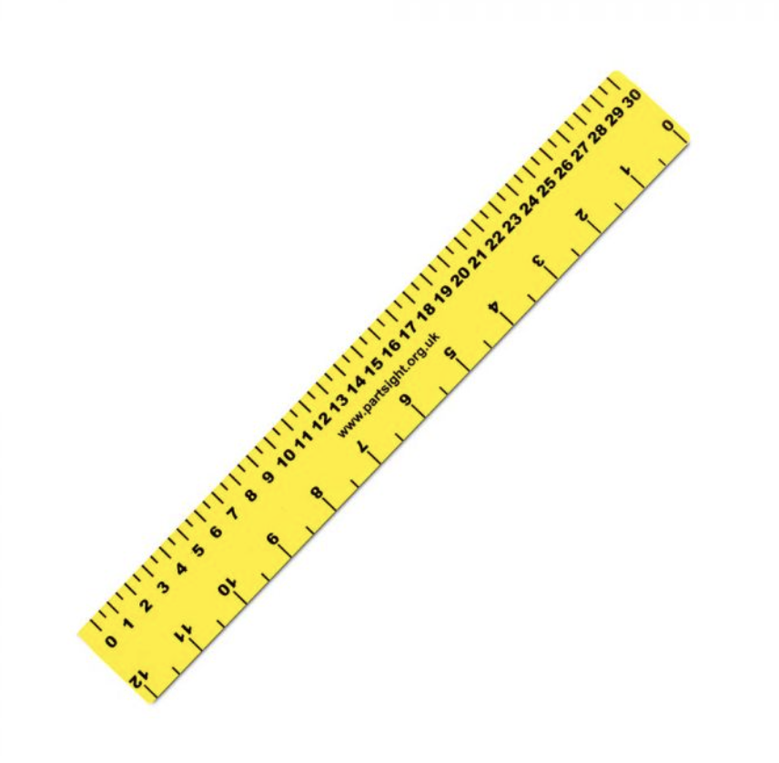
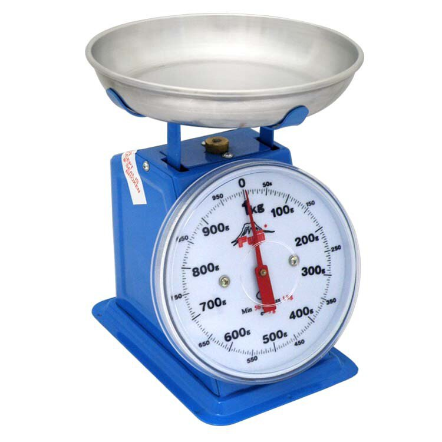
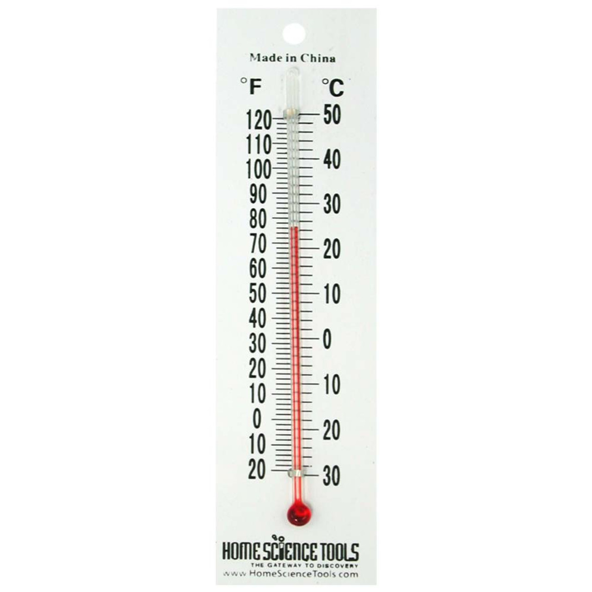
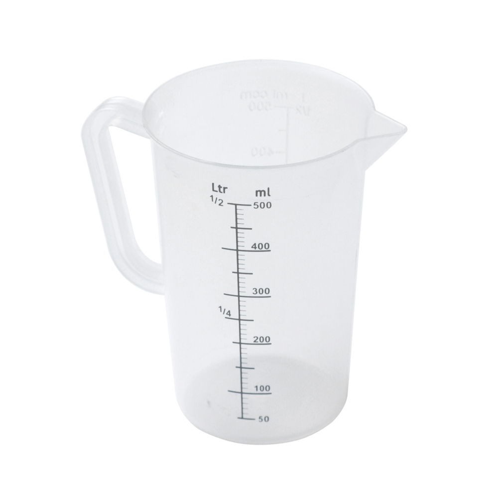

What Are Scales and Instruments?
Scales and Instruments:
- Scales show the value of a measurement (e.g., weight, length, or capacity).
- Instruments are tools used for measuring. Common examples include:
- Thermometers (for temperature),
- Rulers (for length),
- Weighing scales (for mass),
- Measuring jugs (for capacity).
Reading Scales and Instruments
Ruler (Length):
- Measures in centimeters (cm) or millimeters (mm).
Example:
- If the ruler shows 3 cm, the object is 3 centimeters long.
- If the measurement is between two marks, estimate the value, e.g., 2.6 cm.

Reading Scales and Instruments
Scale (Mass):
- Measures in kilograms (kg) or grams (g).
Example:
- If the scale shows 2.3 kg, the mass is 2.3 kilograms.
- If the scale shows 3.45 kg, it’s 3 kg and 450 grams.

Reading Scales and Instruments
Thermometer (Temperature):
- Measures in degrees Celsius (°C).
Example:
- If the thermometer shows 25°C, the temperature is 25 degrees Celsius.

Reading Scales and Instruments
Jug (Capacity):
- Measures in liters (l) or milliliters (ml).
Example:
- If the jug shows 500 ml, the capacity is 500 milliliters.

Tips for Interpreting Readings
General Tips:
- Always ensure the instrument is properly aligned with the object you're measuring.
- For digital instruments, make sure you understand how the decimals reflect the value.
- Estimation is key when dealing with instruments that have a scale with marks in between.
Practical Examples:
- Ruler Example:
-
If you're measuring the length of a pencil and it's between 5 cm and 6 cm, estimate as 5.5 cm.
- Weighing Scale Example:
-
If the scale shows 4.5 kg, it means 4 kilograms and 500 grams.
- Thermometer Example:
-
If the thermometer reads between 30°C and 31°C, estimate the temperature as 30.6°C.